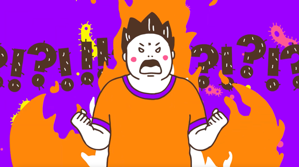
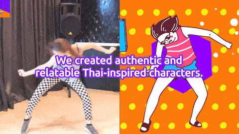
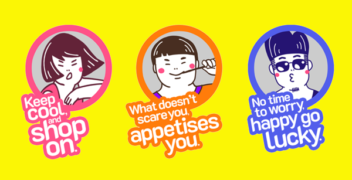

REVEAL YOUR THAIDENTITY!
2020CREATIVE DIRECTION
Singaporeans’ traveling to Thailand was on a decline and the client challenged the team to bring back the interest to visit.
- 

Right from the start, the team knew what to avoid and go whimsical and really bring out the charm of Thailand—through characters that embrace that inner “Thai-ness”.
- 
- 
Production efficiency was priority with 2D animation in order to expand out to multiple creative assets that capture attention across the digital space. Smashed initial KPIs and great response across media and socials.
Won a couple of recognition including Red Dot Design. Via Aught.


- © systemzero5